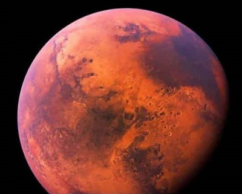
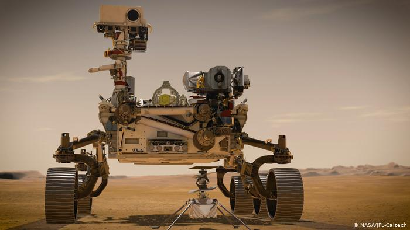

Escrito por: Arthur Barros Resende
Rover Perseverance, mais conhecido como apenas Perseverance, é um robô que foi para Marte com a missão de buscar sinais de vida antiga, tirar fotos do planeta e coletar amostras de rocha, e é claro voltar para a Terra com segurança
O Perseverance é do tamanho de um carro, com cerca de 3 metros de comprimento, 2,7 metros de largura, e 2,2 metros de altura, e conta com 1050kg.
O Perseverance quejá está atualmente em missão, desde o dia de 18 de fevereiro, desde então ele tem apenas mandado fotos, e vídeos ao seu redor, e inclusive fazendo o seu Checkup, que dura cerca de 15 dias.
Consequentemente, ele ainda está se preparando para buscar vida em Marte, e fazer o recolhimento das rochas, e já está a mais de 1 mês se preparando.
Sua missão é de extrema importância, pois com o robô, poderemos especular expedições humanas, quanto ao tempo que o Perseverance vai ficar em Marte, a NASA que é a que comanda essa expedição, especula que seja cerca de 1 ano.
Escrito por: Arthurhttps://mars.nasa.gov/mars2020